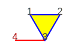
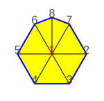
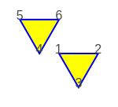
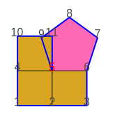
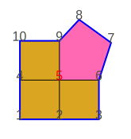
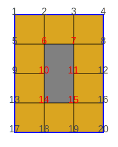
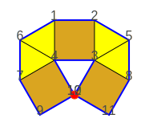
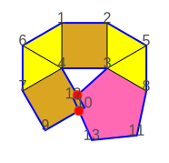
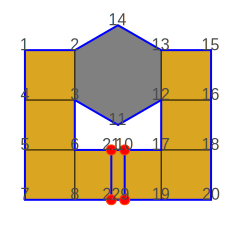
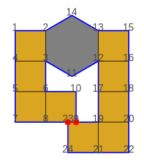

Tiling validation
A Tiling instance that represents a valid tessellation is an undirected graph with the following properties.
Labelling
All vertices must be numbered starting from 1 and increasing by one with no gaps
 |
|---|
Tiling with invalid labels |
Tiling.maybe(1--2, 1--4, 2--4).isRight // false
Three only vertices must be labelled 1, 2 and 3
Nodes degree
All vertices must be connected to at least 2 other vertices (node degree >= 2)
|  |
|---|
Tiling with invalid node degree 1 |
Tiling.maybe(1--2, 1--3, 2--3, 3--4).isRight // false
Vertex 4 has degree 1, is part of an open polygon
All vertices must be connected to at most 6 other vertices (node degree <= 6)
|  |
|---|
Tiling with invalid node degree 7 |
Tiling.maybe(1--2, 1--3, 1--4, 1--5, 1--6, 1--7, 1--8, 2--3, 2--7, 3--4, 4--5, 5--6, 6--8, 7--8).isRight // false
Vertex 1 has degree 7, not valid since the regular polygon with the smaller interior angle, the regular triangle, fills the full angle with 6 units
Nodes connection
Graph must be connected
|  |
|---|
Tiling not connected |
Tiling.maybe(1--2, 1--3, 2--3, 4--5, 4--6, 5--6).isRight // false
Vertices 1, 2, 3 are not connected to vertices 4, 5, 6
All polygons at the same vertex must be adjacent
 |
|---|
Invalid Tiling ____________________ |
Tiling.maybe(1--2, 1--3, 1--4, 1--5, 2--3, 4--5).isRight // false
Non-adjacent polygons at vertex 1, the graph is only “thinly” connected
Angle of adjacent polygons
Total interior angle of the adjacent polygons at the same vertex must be equal or less than a full circle
|  |
|---|
Invalid Tiling ________________________ |
Tiling.maybe(1--2, 1--4, 2--3, 2--5, 3--6, 4--5, 4--10, 5--6, 5--9, 5--11, 6--7, 7--8, 8--9, 10--11).isRight // false
Three squares and a regular pentagon at vertex 5 make more than a full circle, where a vertex on the perimeter of a tessellation must be less than full
|  |
|---|
Invalid Tiling ________________________ |
Tiling.maybe(1--2, 1--4, 2--3, 2--5, 3--6, 4--5, 4--10, 5--6, 5--9, 6--7, 7--8, 8--9, 9--10).isRight // false
Same as above, but now vertex 5 is internal and must be exactly full
|  |
|---|
Invalid Tiling ________________________________ |
Tiling.maybe(
1--2, 1--5, 2--3, 2--6, 3--4, 3--7, 4--8, 5--6, 5--9, 6--7, 6--10, 7--8, 7--11, 8--12, 9--10, 9--13, 10--14, 11--12,
11--15, 12--16, 13--14, 13--17, 14--15, 14--18, 15--16, 15--19, 16--20, 17--18, 18--19, 19--20
).isRight // false
Considered that the “hole” is a hexagon, the internal vertices 6, 7, 14, 15 are more than full and 10, 11 are less than full
Spatial requirements
Any two vertices must not overlap
|  |
|---|
Tiling with overlapping vertices |
Tiling.maybe(
1--2, 1--4, 1--6, 2--3, 2--5, 3--4, 3--5, 3--8, 3--12, 4--6, 4--7, 4--8, 5--8, 6--7, 7--9, 8--11, 9--10, 11--12
).isRight // false
Vertices 10 and 12 overlap
Any two sides must not intersect
|  |
|---|
Tiling with intersecting sides |
Tiling.maybe(
1--2, 1--4, 1--6, 2--3, 2--5, 3--4, 3--5, 3--8, 3--12, 4--6, 4--7, 4--8, 5--8, 6--7, 7--9, 8--11, 9--10, 11--13, 12--13
).isRight // false
Sides 3–12 intersecting with 4–10 and 9–10 with 12–13
|  |
|---|
Tiling with overlapping sides |
Tiling.maybe(
1--2, 1--4, 2--3, 2--14, 3--4, 3--6, 3--11, 4--5, 5--6, 5--7, 6--8, 6--10, 7--8, 8--9, 9--10, 11--12, 12--13, 12--16,
12--17, 13--14, 13--15, 15--16, 16--18, 17--18, 17--19, 17--21, 18--20, 19--20, 19--22, 21--22
).isRight // false
Sides 6–10 overlapping with 21–17 and 8–9 with 22–19
|  |
|---|
Tiling with overlapping sides |
Tiling.maybe(
1--2, 1--4, 2--3, 2--14, 3--4, 3--6, 3--11, 4--5, 5--6, 5--7, 6--8, 6--10, 7--8, 8--9, 9--10, 11--12, 12--13, 12--16,
12--17, 13--14, 13--15, 15--16, 16--18, 17--18, 17--19, 18--20, 19--20, 19--21, 19--23, 20--22, 21--22, 21--24, 23--24
).isRight // false
Sides 8–9 overlapping with 23–19